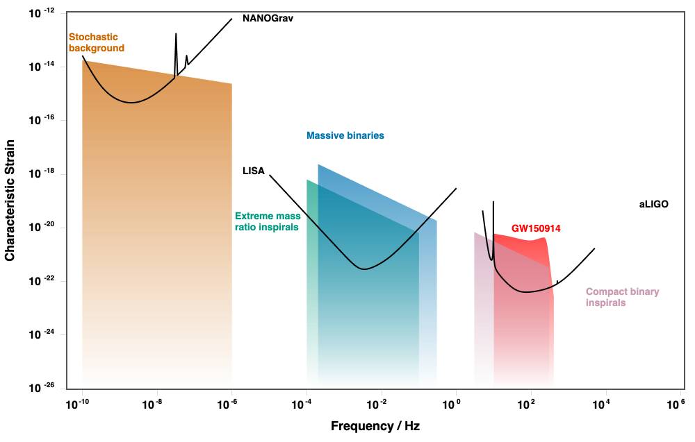
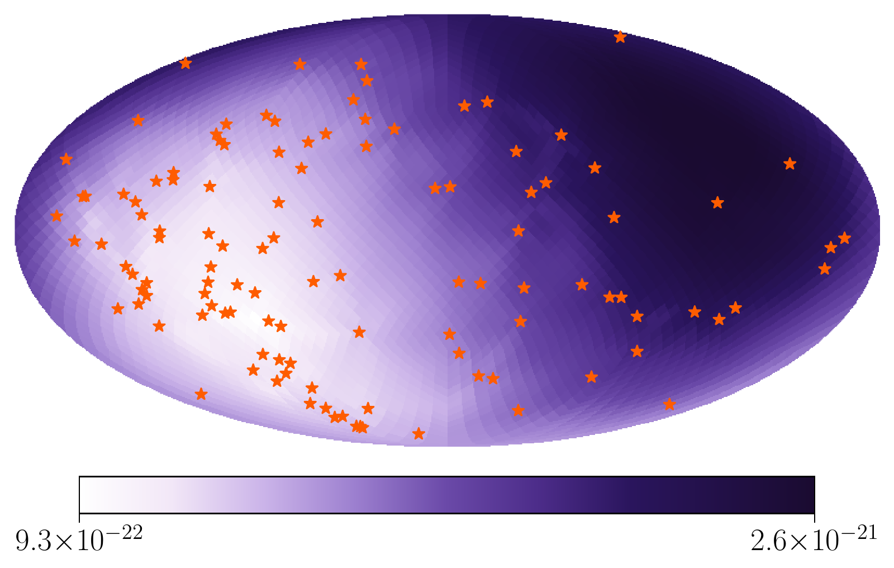
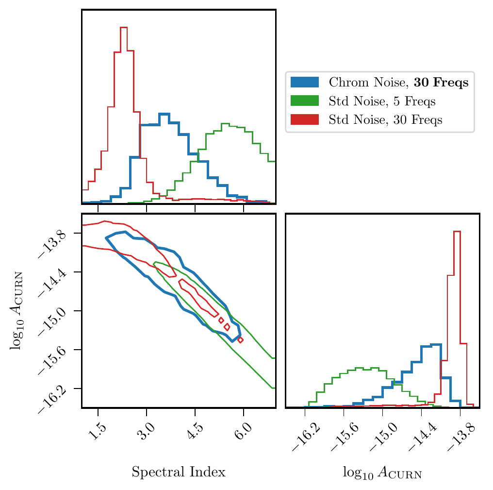
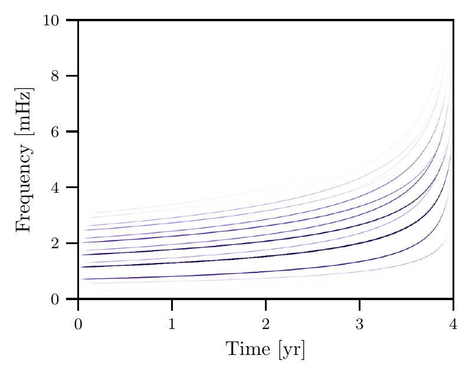
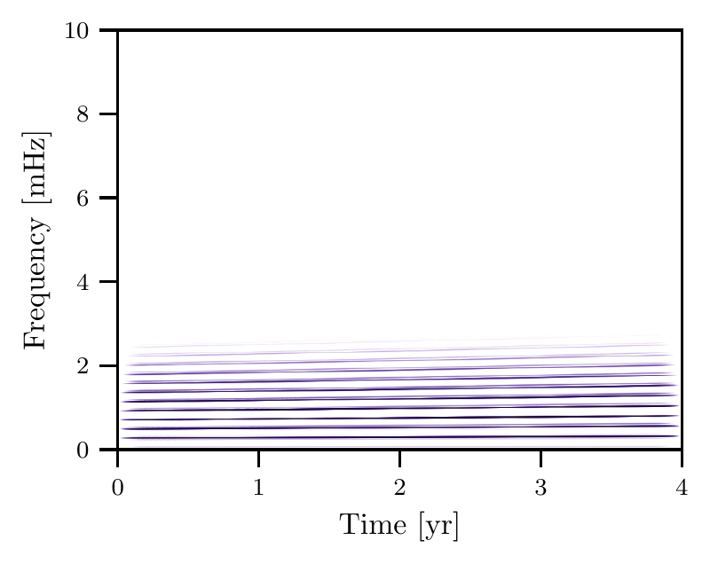

The Gravitational Wave Spectrum
My research spans two complementary regions of the gravitational wave spectrum: the nanohertz
band where pulsar timing arrays like NANOGrav operate, and the millihertz band that the
upcoming space-based observatory LISA will probe. Click on a detector below to jump to the
related research section.

Sensitivity curves for current and proposed gravitational wave detectors. Adapted from GWPlotter (Jeremy Baier branch); original from GWPlotter (Main branch).
Pulsar Timing Arrays
Pulsar timing arrays (PTAs) detect gravitational waves at nanohertz frequencies
(10-10–10-7 Hz) by monitoring tiny variations in the arrival
times of pulses from millisecond pulsars.
Pulsar timing for the detection of nanohertz-scale gravitational waves, first suggested by
M. V. Sazhin (1978) and S. Detweiler (1979), leverages the stability of pulse profiles to estimate
minuscule deviations from their expected times of arrival (TOAs). Such deviations, if correlated
between all observed pulsars across the sky in agreement with the Hellings–Downs curve
(R. W. Hellings & G. S. Downs 1983), point toward the existence of a stochastic nanohertz
gravitational-wave background (GWB). Pulsar timing arrays (PTAs) such as the North American
Nanohertz Observatory for Gravitational Waves (NANOGrav) are built preferentially from millisecond
pulsars (MSPs), named for their short rotational periods and famous for their high rotational
stability relative to canonical pulsars. The NANOGrav PTA consisted of 68 MSPs at the time of the
15 yr data release (G. Agazie et al. 2023), all of which were chosen for their pulse
shape stability, rotational stability, and/or brightness. (Jacobson-Bell et al. 2026)
Anisotropic Sensitivity
With strong evidence now in hand for a
stochastic gravitational wave background, most likely sourced by inspiraling
supermassive black hole binaries, one of the next big questions is how that
background is distributed across the sky. A non-uniform population of binaries should
imprint anisotropy on the background, and detecting it would be a strong hint of the
underlying astrophysics.
My current main thrust is developing an analytical framework for the sensitivity of a
PTA to anisotropic backgrounds, pulsar-by-pulsar, direction-by-direction. The
figure below shows an effective sensitivity skymap Seff for a simulated
array; the array is, as expected, most sensitive where pulsars are concentrated. The
formalism is described in full in Oliver et al. (2026b),
and is released as an extension to the hasasia sensitivity package.

Per-pixel radiometer effective sensitivity Seffrad at the peak sensitivity frequency (f ≈ 8.54 nHz) for the 16-year SPTA. Lighter regions are more sensitive; sensitivity is best where pulsars (stars) are clustered. Figure 6a from Oliver et al. (2026b).
Customized Chromatic Noise Models
The frequency-dependent (chromatic) delays imprinted on pulse arrival times by the
interstellar and interplanetary medium can be up to two orders of magnitude louder
than the gravitational wave background itself. How those delays are modeled directly
affects the inferred spectrum of the background, so getting the noise models right is
essential. I work on building customized chromatic noise models for each pulsar in
NANOGrav’s datasets, testing the significance of competing noise prescriptions
on a per-pulsar basis.
These delays also strongly depend on the line-of-sight properties to each individual pulsar. To address
this, we present customized chromatic noise models for 67 pulsars in the NANOGrav 15 yr dataset. After
applying our chromatic models, we observe significant impacts on the inference of achromatic noise in 19
out of 67 pulsars, finding in several cases that a previously significant achromatic noise process can be
partially or entirely described as chromatic. (Larsen, Baier, Oliver, et al. 2026)
We report updated nHz gravitational wave (GW) significance, characterization, and interpretations using
the customized chromatic-noise models (CNMs) developed in Larsen, Baier et al. (2026) for the
NANOGrav 15-year data set. We find increased evidence for the Hellings-Downs (HD) correlation signature
of the stochastic gravitational wave background (GWB), with a Bayes factor of 1571 ± 14 for
HD-correlations over a common uncorrelated red-noise process using a power-law model with 14 Fourier
modes. We find this ∼8× increase in Bayes factor from Agazie et al. (2023a)
is a result of improved noise mitigation. (Agarwal et al. 2026)

Figure 10 from Hazboun, Simon, Larsen, Baier, Oliver, et al. (2026): comparison of customized chromatic noise modeling (blue) against the standard noise approach at 5 (green) and 30 (red) frequencies. The chromatic models bring the recovered gravitational wave background results more in line with the common process.
Laser Interferometer Space Antenna
Gravitational waves (GWs) were first detected with the Laser Interferometer Gravitational Wave Observatory
(LIGO) on 14 September 2015, generated from two black holes on the order of ∼30 M☉. While
LIGO allowed us access to high-frequency GW sources at low redshift, the Laser Interferometer Space Antenna
(LISA), the proposed ESA-NASA space-based GW detector, will allow us to look into lower frequencies
(0.1 mHz–0.1 Hz) and expand our range to redshifts of z ∼ 20. The technology behind LISA has been
successfully tested by LISA Pathfinder which produced outstanding results showing that the drag-free
technology can work with great accuracy. (Oliver et al. 2024)
The 2017 LISA proposal specified a nominal science phase of four years, which the LISA Definition Study
Report revises to a 4.5-year phase at ∼82% uptime, resulting in ∼3.69 years of accumulated data,
with a possible extension out to ten years. (Oliver et al. 2026c)
Extreme Mass Ratio Inspirals
A prime LISA source is the extreme
mass ratio inspiral (EMRI): a stellar-mass compact object (~10 M☉)
spiraling into a massive black hole (105–108
M☉) at the center of a galaxy.
The Gravitational Wave Peep
EMRI orbits typically start out highly eccentric and only emit detectable radiation
in brief bursts as the compact object swings past periapsis.
Each one of these bursts is a gravitational wave “peep”,
firmly in the LISA band even when the long-period orbit itself is not. A single peep
is unlikely to be individually resolvable, but a cosmological population of them out
to redshift z = 3 contributes to LISA’s signal confusion noise. My dissertation
and follow-up work focuses on modeling that background and quantifying how much it
can obscure otherwise-detectable LISA sources.
 A fully modeled EMRI waveform from capture to merger using a numerical kludge code (a = 0.8 M, p = 119.999916 M, e = 0.9999981). Repeated bursts at periapsis give rise to the gravitational wave peep. From Oliver et al. (2024).
A fully modeled EMRI waveform from capture to merger using a numerical kludge code (a = 0.8 M, p = 119.999916 M, e = 0.9999981). Repeated bursts at periapsis give rise to the gravitational wave peep. From Oliver et al. (2024).
 Stochastic background from gravitational wave peeps under three different population assumptions, plotted against the LISA A and E channel sensitivity curves. From Oliver et al. (2026a).
Stochastic background from gravitational wave peeps under three different population assumptions, plotted against the LISA A and E channel sensitivity curves. From Oliver et al. (2026a).
Post-Mission EMRIs
A stellar-mass compact object can radiate in the millihertz band for years to decades before it
plunges into its massive black hole, so a substantial fraction of the EMRIs that LISA can detect
will still be inspiraling when the mission ends. We find that post-mission EMRIs are roughly one in
four of the LISA-detectable population at ρ > 20 over the four-year mission, and roughly one
in six over the ten-year extended mission. (Oliver et al. 2026c)

(a) Merges within 4 years

(b) Merges at 20 years
Four-year spectrograms of the strain for one EMRI (with parameters M = 106 M☉, m = 10 M☉, a = 0.9, ef = 0.05, at redshift z = 1), but starting at two different times. In (a) one sees the waveform starting four years before plunge. In (b), it starts 20 years before plunge. Clearly, both four-year segments are basically in-band for LISA, but are qualitatively different. From Oliver et al. (2026c).